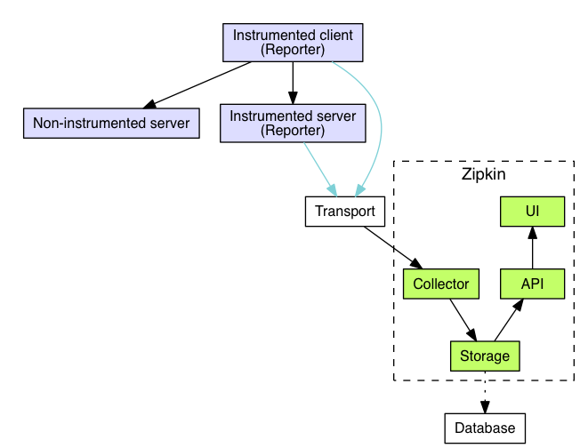
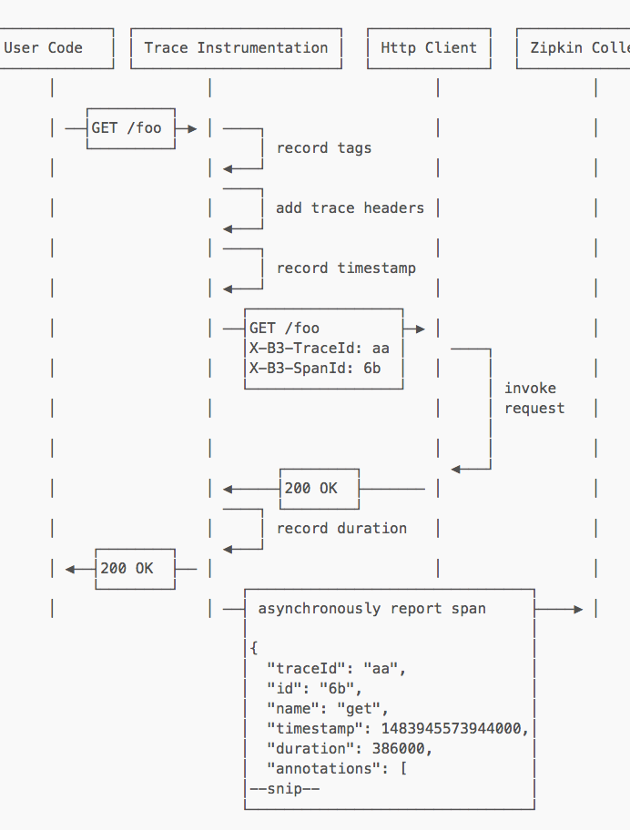
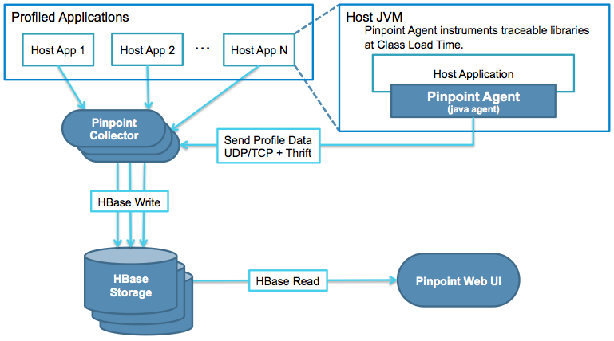
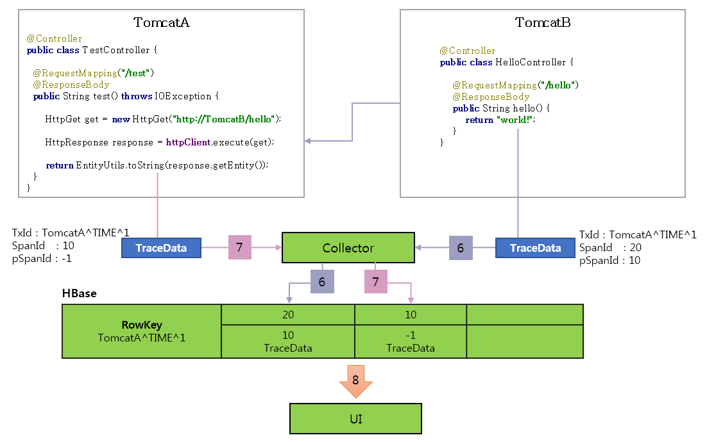
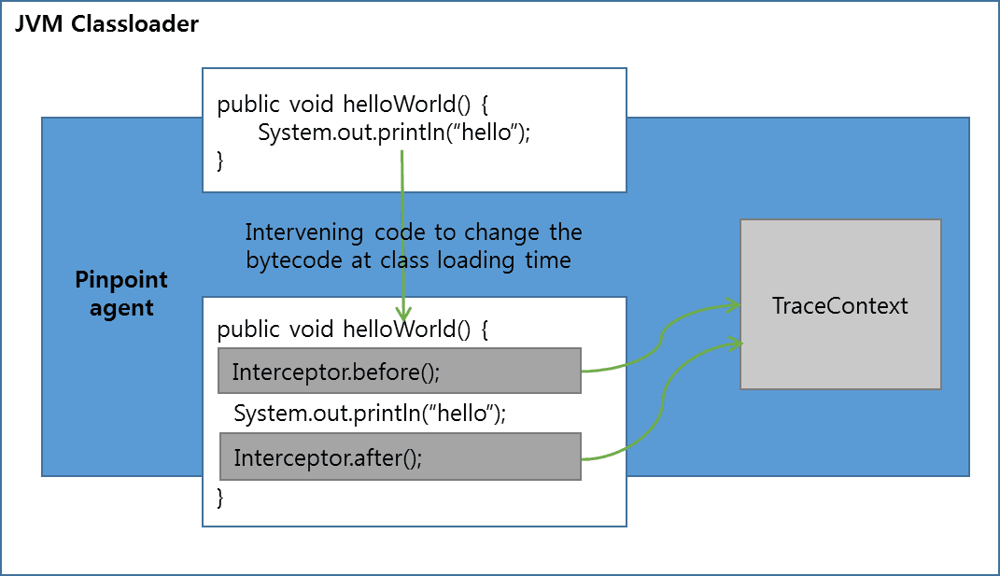
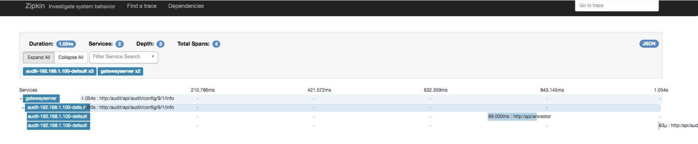
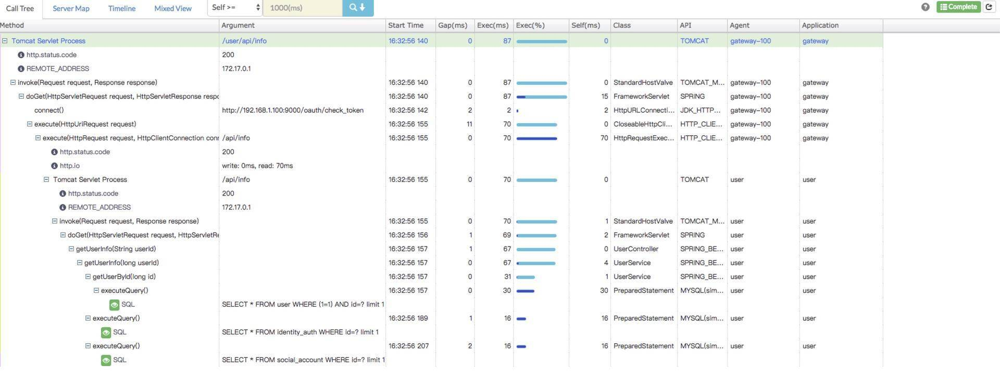
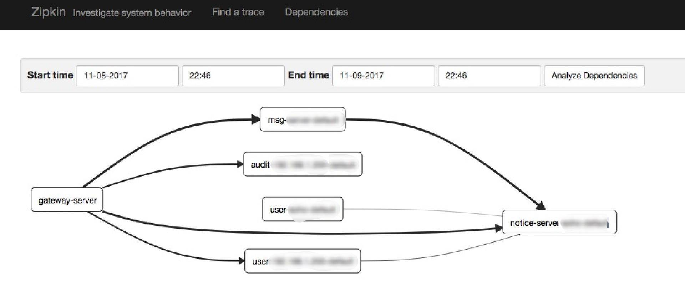
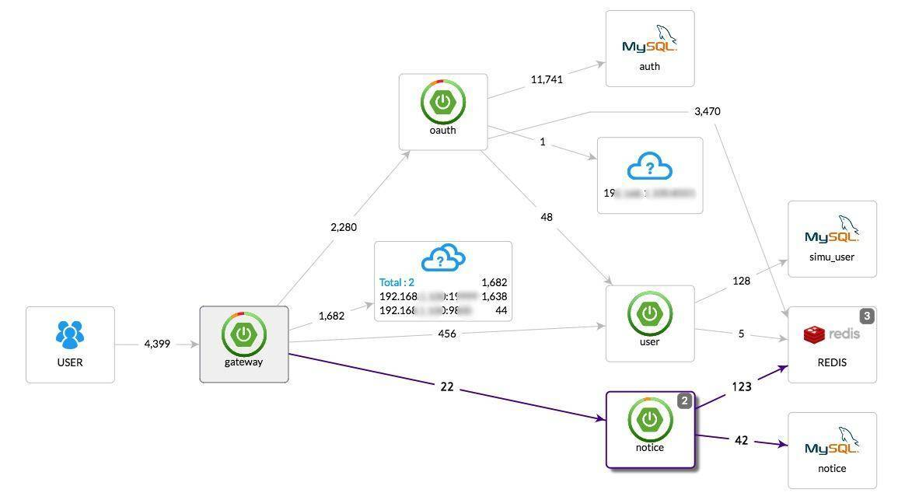

- 00 开篇词 微服务，从放弃到入门.md.html
- 01 到底什么是微服务？.md.html
- 02 从单体应用走向服务化.md.html
- 03 初探微服务架构.md.html
- 04 如何发布和引用服务？.md.html
- 05 如何注册和发现服务？.md.html
- 06 如何实现RPC远程服务调用？.md.html
- 07 如何监控微服务调用？.md.html
- 08 如何追踪微服务调用？.md.html
- 09 微服务治理的手段有哪些？.md.html
- 10 Dubbo框架里的微服务组件.md.html
- 11 服务发布和引用的实践.md.html
- 12 如何将注册中心落地？.md.html
- 13 开源服务注册中心如何选型？.md.html
- 14 开源RPC框架如何选型？.md.html
- 15 如何搭建一个可靠的监控系统？.md.html
- 16 如何搭建一套适合你的服务追踪系统？.md.html
- 17 如何识别服务节点是否存活？.md.html
- 18 如何使用负载均衡算法？.md.html
- 19 如何使用服务路由？.md.html
- 20 服务端出现故障时该如何应对？.md.html
- 21 服务调用失败时有哪些处理手段？.md.html
- 22 如何管理服务配置？.md.html
- 23 如何搭建微服务治理平台？.md.html
- 24 微服务架构该如何落地？.md.html
- 25 微服务为什么要容器化？.md.html
- 26 微服务容器化运维：镜像仓库和资源调度.md.html
- 27 微服务容器化运维：容器调度和服务编排.md.html
- 28 微服务容器化运维：微博容器运维平台DCP.md.html
- 29 微服务如何实现DevOps？.md.html
- 30 如何做好微服务容量规划？.md.html
- 31 微服务多机房部署实践.md.html
- 32 微服务混合云部署实践.md.html
- 33 下一代微服务架构Service Mesh.md.html
- 34 Istio：Service Mesh的代表产品.md.html
- 35 微博Service Mesh实践之路（上）.md.html
- 36 微博Service Mesh实践之路（下）.md.html
- 微博技术解密（上） 微博信息流是如何实现的？.md.html
- 微博技术解密（下）微博存储的那些事儿.md.html
- 结束语 微服务，从入门到精通.md.html
- 阿忠伯的特别放送 答疑解惑01.md.html
- 阿忠伯的特别放送 答疑解惑02.md.html
- 捐赠
16 如何搭建一套适合你的服务追踪系统？
[专栏第8期]我给你讲了服务追踪系统的原理以及实现，简单回顾一下服务追踪系统的实现，主要包括三个部分。
埋点数据收集，负责在服务端进行埋点，来收集服务调用的上下文数据。
实时数据处理，负责对收集到的链路信息，按照traceId和spanId进行串联和存储。
数据链路展示，把处理后的服务调用数据，按照调用链的形式展示出来。
如果要自己从0开始实现一个服务追踪系统，针对以上三个部分你都必须有相应的解决方案。首先你需要在业务代码的框架层开发调用拦截程序，在调用的前后收集相关信息，把信息传输给到一个统一的处理中心。然后处理中心需要实时处理收集到链路信息，并按照traceId和spanId进行串联，处理完以后再存到合适的存储中。最后还要能把存储中存储的信息，以调用链路图或者调用拓扑图的形式对外展示。
可以想象这个技术难度以及开发工作量都不小，对于大部分中小业务团队来说，都十分具有挑战。不过幸运的是，业界已经有不少开源的服务追踪系统实现，并且应用范围也已经十分广泛，对大部分的中小业务团队来说，足以满足对服务追踪系统的需求。
业界比较有名的服务追踪系统实现有阿里的鹰眼、Twitter开源的OpenZipkin，还有Naver开源的Pinpoint，它们都是受Google发布的Dapper论文启发而实现的。其中阿里的鹰眼解决方案没有开源，而且由于阿里需要处理数据量比较大，所以鹰眼的定位相对定制化，不一定适合中小规模的业务团队，感兴趣的同学可以点击本期文章末尾“拓展阅读”进行学习。
下面我主要来介绍下开源实现方案OpenZipkin和Pinpoint，再看看它们有什么区别。
OpenZipkin
OpenZipkin是Twitter开源的服务追踪系统，下面这张图展示了它的架构设计。
- （图片来源：https://zipkin.io/public/img/architecture-1.png）
从图中看，OpenZipkin主要由四个核心部分组成。
Collector：负责收集探针Reporter埋点采集的数据，经过验证处理并建立索引。
Storage：存储服务调用的链路数据，默认使用的是Cassandra，是因为Twitter内部大量使用了Cassandra，你也可以替换成Elasticsearch或者MySQL。
API：将格式化和建立索引的链路数据以API的方式对外提供服务，比如被UI调用。
UI：以图形化的方式展示服务调用的链路数据。
它的工作原理可以用下面这张图来描述。
- （图片来源：https://zipkin.io/pages/architecture.html）
具体流程是，通过在业务的HTTP Client前后引入服务追踪代码，这样在HTTP方法“/foo”调用前，生成trace信息：TraceId：aa、SpanId：6b、annotation：GET /foo，以及当前时刻的timestamp：1483945573944000，然后调用结果返回后，记录下耗时duration，之后再把这些trace信息和duration异步上传给Zipkin Collector。
Pinpoint
Pinpoint是Naver开源的一款深度支持Java语言的服务追踪系统，下面这张图是它的架构设计。
- （图片来源：http://naver.github.io/pinpoint/1.7.3/images/pinpoint-architecture.png）
Pinpoint主要也由四个部分组成。
Pinpoint Agent：通过Java字节码注入的方式，来收集JVM中的调用数据，通过UDP协议传递给Collector，数据采用Thrift协议进行编码。
Pinpoint Collector：收集Agent传过来的数据，然后写到HBase Storgage。
HBase Storage：采用HBase集群存储服务调用的链路信息。
Pinpoint Web UI：通过Web UI展示服务调用的详细链路信息。
它的工作原理你可以看这张图。
- （图片来源：http://naver.github.io/pinpoint/1.7.3/images/td_figure6.png）
具体来看，就是请求进入TomcatA，然后生成TraceId：TomcatA^ TIME ^ 1、SpanId：10、pSpanId：-1（代表是根请求），接着TomatA调用TomcatB的hello方法，TomcatB生成TraceId：TomcatA^ TIME ^1、新的SpanId：20、pSpanId：10（代表是TomcatA的请求），返回调用结果后将trace信息发给Collector，TomcatA收到调用结果后，将trace信息也发给Collector。Collector把trace信息写入到HBase中，Rowkey就是traceId，SpanId和pSpanId都是列。然后就可以通过UI查询调用链路信息了。
选型对比
根据我的经验，考察服务追踪系统主要从下面这几个方面。
1. 埋点探针支持平台的广泛性
OpenZipkin和Pinpoint都支持哪些语言平台呢？
OpenZipkin提供了不同语言的Library，不同语言实现时需要引入不同版本的Library。
官方提供了C#、Go、Java、JavaScript、Ruby、Scala、PHP等主流语言版本的Library，而且开源社区还提供了更丰富的不同语言版本的Library，详细的可以点击这里查看；而Pinpoint目前只支持Java语言。
所以从探针支持的语言平台广泛性上来看，OpenZipkin比Pinpoint的使用范围要广，而且开源社区很活跃，生命力更强。
2. 系统集成难易程度
再来看下系统集成的难易程度。
以OpenZipkin的Java探针Brave为例，它只提供了基本的操作API，如果系统要想集成Brave，必须在配置里手动里添加相应的配置文件并且增加trace业务代码。具体来讲，就是你需要先修改工程的POM依赖，以引入Brave相关的JAR包。
<dependencyManagement>
<dependencies>
<dependency>
<groupId>io.zipkin.brave</groupId>
<artifactId>brave-bom</artifactId>
<version>${brave.version}</version>
<type>pom</type>
<scope>import</scope>
</dependency>
</dependencies>
</dependencyManagement>
然后假如你想收集每一次HTTP调用的信息，你就可以使用Brave在Apache Httpclient基础上封装的httpClient，它会记录每一次HTTP调用的信息，并上报给OpenZipkin。
httpclient =TracingHttpClientBuilder.create(tracing).build();
而Pinpoint是通过字节码注入的方式来实现拦截服务调用，从而收集trace信息的，所以不需要代码做任何改动。Java字节码注入的大致原理你可以参考下图。
- （图片来源：http://naver.github.io/pinpoint/1.7.3/images/td_figure3.png）
我来解释一下，就是JVM在加载class二进制文件时，动态地修改加载的class文件，在方法的前后执行拦截器的before()和after()方法，在before()和after()方法里记录trace()信息。而应用不需要修改业务代码，只需要在JVM启动时，添加类似下面的启动参数就可以了。
-javaagent:$AGENT_PATH/pinpoint-bootstrap-$VERSION.jar
-Dpinpoint.agentId=<Agent's UniqueId>
-Dpinpoint.applicationName=<The name indicating a same service (AgentId collection)
所以从系统集成难易程度上看，Pinpoint要比OpenZipkin简单。
3. 调用链路数据的精确度
从下面这张OpenZipkin的调用链路图可以看出，OpenZipkin收集到的数据只到接口级别，进一步的信息就没有了。
- （图片来源：http://ovcjgn2x0.bkt.clouddn.com/zipkin-info.jpg）
再来看下Pinpoint，因为Pinpoint采用了字节码注入的方式实现trace信息收集，所以它能拿到的信息比OpenZipkin多得多。从下面这张图可以看出，它不仅能够查看接口级别的链路调用信息，还能深入到调用所关联的数据库信息。
- （图片来源：http://ovcjgn2x0.bkt.clouddn.com/pp-info.jpg）
同理在绘制链路拓扑图时，OpenZipkin只能绘制服务与服务之间的调用链路拓扑图，比如下面这张示意图。
- （图片来源：http://ovcjgn2x0.bkt.clouddn.com/zipdependency1.jpg）
而Pinpoint不仅能够绘制服务与服务之间，还能绘制与DB之间的调用链路拓扑图，比如下图。
- （图片来源：http://ovcjgn2x0.bkt.clouddn.com/ppreal.jpg）
所以，从调用链路数据的精确度上看，Pinpoint要比OpenZipkin精确得多。
总结
今天我给你讲解了两个开源服务追踪系统OpenZipkin和Pinpoint的具体实现，并从埋点探针支持平台广泛性、系统集成难易程度、调用链路数据精确度三个方面对它们进行了对比。
从选型的角度来讲，如果你的业务采用的是Java语言，那么采用Pinpoint是个不错的选择，因为它不需要业务改动一行代码就可以实现trace信息的收集。除此之外，Pinpoint不仅能看到服务与服务之间的链路调用，还能看到服务内部与资源层的链路调用，功能更为强大，如果你有这方面的需求，Pinpoint正好能满足。
如果你的业务不是Java语言实现，或者采用了多种语言，那毫无疑问应该选择OpenZipkin，并且，由于其开源社区很活跃，基本上各种语言平台都能找到对应的解决方案。不过想要使用OpenZipkin，还需要做一些额外的代码开发工作，以引入OpenZipkin提供的Library到你的系统中。
除了OpenZipkin和Pinpoint，业界还有其他开源追踪系统实现，比如Uber开源的Jaeger，以及国内的一款开源服务追踪系统SkyWalking。不过由于目前应用范围不是很广，这里就不详细介绍了，感兴趣的同学可以点击“拓展阅读”自行学习。
思考题
OpenZipkin在探针采集完数据后有两种方式把数据传递给Collector，一种是通过HTTP调用，一种是基于MQ的异步通信方式，比如使用RabbitMQ或者Kafka，你觉得哪种方式更好一些？为什么？
欢迎你在留言区写下自己的思考，与我一起讨论。
拓展阅读：
阿里巴巴鹰眼：http://ppt.geekbang.org/slide/download/939/595f4cdcb9d52.pdf/18
Jaeger：https://www.jaegertracing.io
© 2019 - 2023 Liangliang Lee. Powered by gin and hexo-theme-book.